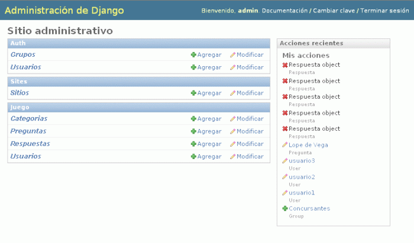
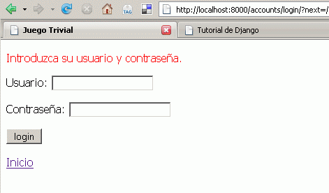
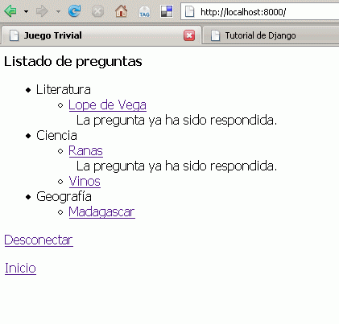
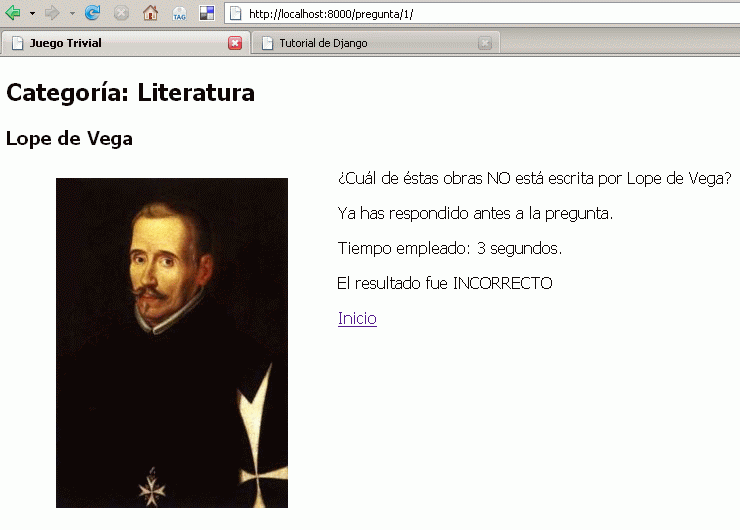
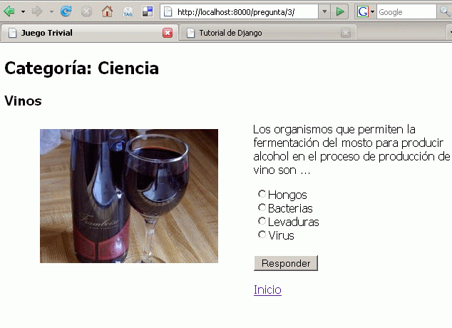
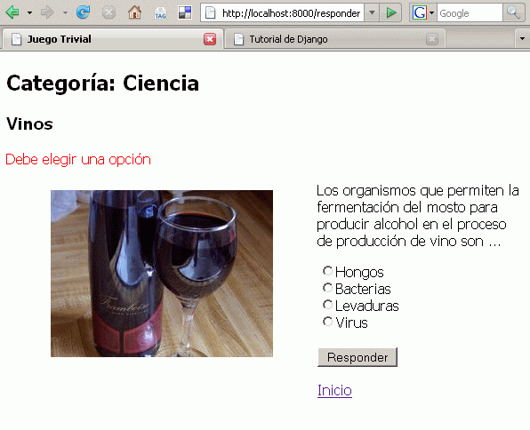
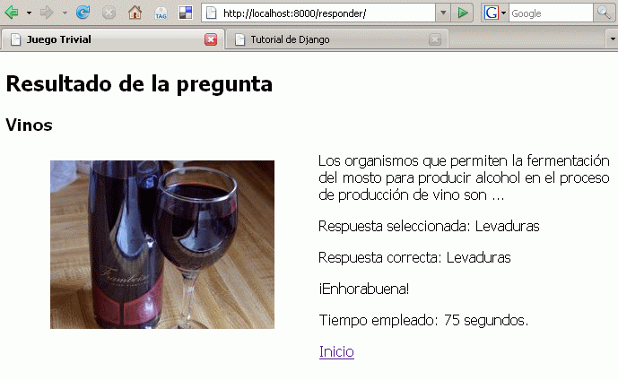

Django es un "framework" para el desarrollo de aplicaciones Web basado en el lenguaje de programación Python y que sigue el patrón de diseño MVC. En los últimos tiempos la palabra "framework" parece que se ha convertido en el "Santo Grial" del desarrollo de aplicaciones Web.
Uno de los "framework" (1) más famosos o populares que se ha dado a conocer ha sido Ruby On Rails. ¿Qué aporta esta herramienta frente a otras alternativas más conocidas y establecidas?.
Lo más novedoso era la prevalencia de la convención frente a la configuración. En vez de andar editando ficheros .xml (como en las herramientas J2EE) se establecía una estructura de directorios estándar para la aplicación, no era necesario configurar mapeos, plantillas, etc.
Rails también abstrae completamente la interacción con bases de datos relacionales: el sistema es capaz de "adivinar" los modelos e inferir los objetos que intervienen en la aplicación con sólo examinar la definición de tablas en el sistema relacional. Hay un objeto, "ActiveRecord" que es el que relaciona o hace de puente entre el sistema relacional y el sistema orientado a objetos.
Basándose en algunas de las ideas de Rails y otras propias han surgido bastantes herramientas de desarrollo de aplicaciones web con una orientación similar: poco código, reusable, etc.
En este artículo presentaremos Django, que recoge muchas de las ideas de Rails y aporta algunas soluciones propias. Desarrollaremos una aplicación viendo los problemas que nos encontramos y cómo los solucionamos. En casi todos los tutoriales que hemos leído, se presenta sólo lo más básico, pero a la hora de avanzar o tratar de hacer algo más "real" nos encontramos con dificultades. Este artículo trata de paliar ésto.
Para seguir este tutorial es necesario conocer el lenguaje Python, y haber leído el tutorial de Django. Por supuesto, asumimos que el lector sabe HTML y tecnologías relacionadas (protocolo HTTP, CSS, etc.)
Es bastante habitual en este mundillo de los "framework MVC - que te cagas" (2) que haya una (sana) competencia entre las distintas herramientas y lenguajes. Podemos encontrar numerosas comparativas, tutoriales, guías, etc, pero todo este (útil) material sólo rasca la superficie de lo que supone trabajar con estas herramientas.
A veces da la impresión de que hay un concurso del tipo ¡Con XXX monto una aplicación del tipo YYY en ZZZ minutos ! ó ¡Mi framework lava más blanco!
No vamos a entrar en el juego. No hemos cronometrado lo que se ha tardado en terminar el ejemplo que desarrollaremos en este artículo. Si contamos líneas de código del ejemplo, se podría "picar" todo en apenas diez minutos, pero no este tiempo es un dato real ni válido. Tampoco vamos a decir que Django es mejor que otras herramientas (ni siquiera lo tenemos claro), aunque sí que mencionaremos qué es lo que nos ha gustado y lo que no nos ha gustado (3, 4).
Como bien es sabido, en el mundillo Python siempre hay mucho donde elegir: ¿Interfaces gráficas? ¿Servidores web? ¿Sistemas de plantillas? ¿...?
Esto puede resultar confuso, puesto que antes de empezar a desarrollar una aplicación del tipo que sea hay que documentarse bastante para elegir la herramienta adecuada. En cuanto a los "Web Frameworks" (otra vez la palabreja ;-) también hay bastantes alternativas. Las más conocidas son Django, TurboGears y Pylons.
Los programadores del lenguaje Ruby no tienen que estrujarse tanto la cabeza. La herramienta por antonomasia para desarrollo web de Ruby es Ruby On Rails. No hay mucho más donde elegir. Esto tiene ventajas (centralización de esfuerzos, uniformidad, ...) e inconvenientes (menor flexibilidad, ...). Cada uno debe valorar qué es lo que prefiere.
Por último, un breve apunte sobre los lenguajes y sus modismos. Ruby es un lenguaje con una filosofía parecida a Perl: "hay más de una forma de hacerlo", Python tiene una aproximación diferente: "hacer las cosas de una sóla manera, la más sencilla". De nuevo, aquí intervienen las preferencias personales de cada uno a la hora de programar. Django sigue bastante la "filosofía pythonera" y tratan de seguir una serie de principios de diseño (mejor explícito que implícito, asumir que el desarrollador sabe lo que está haciendo, ...).
Django distingue entre proyectos y aplicaciones. Un proyecto
es un sitio web completo que constar de una o varias
aplicaciones. Estas aplicaciones las proporciona Django o las
escribe el desarrollador. El comando que crea un proyecto es
django-admin.py. No vamos a repetir lo que cuenta
el
tutorial de Django. Simplemente, con django-admin.py
startproject miweb se crea un directorio
miweb que contiene varios ficheros .py:
__init__.py, manage.py,
settings.py y urls.py.
__init__.py: Define nuestro directorio como un
módulo Python válido.manage.py: Utilidad para gestionar nuestro
proyecto: arrancar servidor de pruebas, sincronizar modelos,
etc.settings.py: Configuración del
proyecto.urls.py: Gestión de las urls. Este
fichero sería el controlador de la aplicación.
Mapea las url entrantes a funciones Python definidas en
módulos.Para crear una aplicación nueva dentro del proyecto
ejecutamos python manage.py startapp miaplicacion.
Este comando crea el directorio miaplicacion y los
ficheros __init__.py, views.py, y
models.py.
__init__.py: Define nuestro directorio como un
módulo Python válido.models.py: Aquí se definen los modelos
u objetos que serán mapeados a una base de datos
relacional.views.py: Define las funciones que van a
responder a las urls entrantes.models.py), vista (views.py),
controlador(urls.py).
Vamos a desarrollar una aplicación web un poco más completa que la que proponen en el tutorial de Django. Es un Trivial multiusuario.
Especificaciones:
Como es una aplicación de prueba, usaremos el servidor de desarrollo que viene con Django. Los ficheros estáticos (CSS, imágenes, etc) también los servirá Django, aunque esta práctica está totalmente desaconsejada en un entorno de producción. Como sistema relacional usaremos sqlite (hay un "driver" para Python).
Nos encontramos en este punto con un enfoque totalmente diferente al de Rails: Django mantiene los modelos relacionales (tablas, relaciones, ...) a partir del modelo que nosotros definimos (en una clase), mientras que Rails "adivina" el modelo a partir del esquema relacional. La ventaja del "enfoque Rails" es que en cuanto que el modelo cambia, la herramienta detecta estos cambios y se refleja automáticmente. El inconveniente es que hay que seguir las convenciones Rails para que ésto funcione.
Personalmente, preferimos el planteamiento de Django: el desarrollador define modelos, la herramienta se encarga de traducir estos modelos a SQL, pero hay un inconveniente: si los modelos cambian, hay que hacer el cambio manualmente en el esquema del sistema relacional. Parece que en posteriores versiones de Django tratarán de implementar esta mejora, pero a día de hoy (Django versión 0.96), no es así.
Tras esta breve disquisición, pasemos a definir los modelos. Encontramos las siguientes entidades:
Lo primero es crear el proyecto: django-admin.py
startproject Trivial
Ajustamos algunos parámetros en
settings.py y urls.py. Habilitaremos la
interfaz administrativa (6), el
directorio desde el que se sirven los contenidos estáticos
y algunos ajustes más.
settings.py (extracto):
MEDIA_ROOT = '/home/david/desarrollo/Trivial/site_media/' MEDIA_URL = 'http://localhost:8000/site_media/' ADMIN_MEDIA_PREFIX = '/media/' INSTALLED_APPS = ( 'django.contrib.auth', 'django.contrib.contenttypes', 'django.contrib.sessions', 'django.contrib.sites', 'django.contrib.admin', 'Trivial.juego', )
urls.py (extracto):
from settings import MEDIA_ROOT
urlpatterns = patterns('',
(r'^admin/', include('django.contrib.admin.urls')),
)
urlpatterns += patterns('django.views',
(r'^site_media/(.*)$', 'static.serve', {'document_root': MEDIA_ROOT}),
)
Cuando queramos pasar a producción, sólo
tendremos que eliminar la última entrada en
urls.py y editar MEDIA_URL en
settings.py.
También tenemos que crear la base de datos sqlite
(comando sqlite data/datos.db).
Ahora, desde el directorio Trivial (directorio raíz)
creamos la aplicación propiamente dicha (juego):
python manage.py startapp juego.
Editamos el fichero juego/models.py para definir
nuestros objetos. Las clases que representan modelos deben
heredar de la clase Model y siguen una sintaxis muy sencilla e
intuitiva.
Django incorpora en el paquete
django.contrib.auth todo un sistema de
autentificación y gestión de usuarios, así
que no vamos a reinventar la rueda y utilizaremos este sistema
(7).
Estos son nuestros modelos:
from django.db import models
from django.contrib.auth.models import User
class Usuario(User):
def __str__(self):
return self.username
class Admin:
pass
class Categoria(models.Model):
nombre = models.CharField("Categoría", maxlength=200)
def __str__(self):
return self.nombre
class Admin:
pass
class Pregunta(models.Model):
categoria = models.ForeignKey(Categoria, verbose_name="Categoría la que pertenece")
titulo = models.CharField("Título", maxlength=200)
texto = models.TextField("Texto de la pregunta")
respuesta_1 = models.CharField(maxlength=200)
respuesta_2 = models.CharField(maxlength=200)
respuesta_3 = models.CharField(maxlength=200)
respuesta_4 = models.CharField(maxlength=200)
respuesta_correcta = models.CharField(maxlength=200)
foto = models.CharField(maxlength=200)
def __str__(self):
return self.titulo
class Admin:
pass
class Respuesta(models.Model):
tiempo = models.IntegerField("Tiempo en segs.")
resultado = models.IntegerField("0 -> incorrecto, 1 -> correcto")
pregunta = models.ForeignKey(Pregunta, verbose_name="Pregunta que se responde")
usuario = models.ForeignKey(User, verbose_name="Usuario que responde")
def __str__(self):
return str(self.pregunta) + " (Usuario: " + str(self.usuario) + ")"
class Admin:
pass
Como decíamos antes, "mejor explícito que
implícito". Definimos un método
__str__ en todas las clases para tener una
descripción "humana" de cada objeto, tanto a la hora de
desarrollar como de gestionar en la interfaz administrativa. La
clase anidada Admin sirve para que la clase madre
aparezca en la interfaz administrativa.
La clase Usuario hereda directamente de la clase User de Django (django.contrib.auth.models.User).
Por último, haremos que Django sincronice la
información que tiene de los modelos con el sistema
relacional (vamos, que cree las tablas necesarias): python
manage.py syncdb Este comando también creará
las tablas necesarias para la aplicación administrativa y
el sistema de gestión de usuarios (de hecho nos
pedirá los datos necesarios para crear un "superusuario").
Si arrancamos el servidor y apuntamos nuestro navegador a
http://localhost:8000/admin/ veremos en marcha la
interfaz de administración:

Lo primero que hemos hecho ha sido crear un grupo (Concursantes) y asignarle el permiso de "crear objetos del tipo Respuesta". Después creamos unos cuantos usuarios y les hacemos miembros del grupo. Ya tenemos un sistema de control de acceso, permisos bastante granulares (estos usuarios sólo podrán crear objetos del tipo Respuesta, pero no modificarlos o borrarlos) sin escribir nada de código.
El siguiente paso es relativamente sencillo si utilizamos las
facilidades que Django nos proporciona. El decorador
@login_required en el paquete
django.contrib.auth.decorators funciona de la
siguiente manera: si el
usuario no está autentificado, redirige a una plantilla o
template de validación (registration/login.html por
defecto):

Si está autentificado, la función "decorada"
(index en este caso) se ejecuta normalmente.
La primera pantalla que queremos que el usuario autenfificado vea es un listado de preguntas clasificado por categorías. Éste sería nuestro "index.html", pero, como hemos dicho, queremos que el usuario se valide antes. Veamos cómo hacerlo.
En urls.py añadimos una entrada para
"mapear" la dirección "/" (raíz del sitio) a
la función "index" en
views.py:
urls.py (extracto):
from settings import MEDIA_ROOT
urlpatterns = patterns('',
(r'^/?$', 'Trivial.juego.views.index'),
(r'^admin/', include('django.contrib.admin.urls')),
)
urlpatterns += patterns('django.views',
(r'^site_media/(.*)$', 'static.serve', {'document_root': MEDIA_ROOT}),
)
Y nuestra función (8)
en views.py sería algo así:
@login_required
def index(request):
categorias = Categoria.objects.all()
preguntas = Pregunta.objects.all()
respuestas = Respuesta.objects.filter(usuario=request.user)
return render_to_response('index.html',
{'categorias': categorias,
'preguntas': preguntas,
'respuestas': respuestas,
'usuario': request.user,}
)
¿Qué hace este index? Recoge todas
las categorías, preguntas y respuestas del usuario
validado y se las "pasa" a una plantilla o template
llamada "index.html". También le pasa los
datos del usuario (request.user). Como hemos especificado
que hay un login previo, podemos estar seguros de que esta
variable "usuario" tiene datos correctos.
Veamos ahora la plantilla o template
index.html, no sin antes repasar cómo
funcionan los templates en Django:
{% extends "base.html" %}
{% block cuerpo %}
<strong>Listado de preguntas</strong>
{% if categorias %}
{% regroup preguntas by categoria as agrupado %}
<ul>
{% for grupo in agrupado %}
<li>{{ grupo.grouper }}</li>
<ul>
{% for item in grupo.list %}
<li><a href="pregunta/{{item.id}}/">{{ item.titulo }}</a><br>
{% for r in respuestas %}
{% ifequal item r.pregunta %}
La pregunta ya ha sido respondida.
{% endifequal %}
{% endfor %}
</li>
{% endfor %}
</ul>
{% endfor %}
</ul>
{% else %}
<p>No hay categorías</p>
{% endif %}
<p><a href="/accounts/logout/">Desconectar</a></p>
{% endblock %}
En este template comprobamos si hay categorías
{% if categorias %} y mostramos en forma de listas
anidadas todas las preguntas de cada categoría con la
etiqueta {% regroup preguntas by categoria as agrupado
%} y lo que sigue. Para cada pregunta comprobamos si tiene
una respuesta asociada:
{% for r in respuestas %}
{% ifequal item r.pregunta %}
La pregunta ya ha sido respondida.
{% endifequal %}
{% endfor %}
Esta comprobación es algo ineficiente (en cada pregunta itera sobre todas las respuestas) pero no lo hemos refinado por mantener la simplicidad. Seguro que se puede hacer mejor ;-)
En este template también estamos utilizando una
característica muy útil: la herencia de plantillas.
En una plantilla aparte (base.html) definimos un
esqueleto con unos bloques de contenido que cada una de las
plantillas "hijas" se encarga de completar con {% block
loquesea %}
Así quedaría nuestra pantalla inicial:

Cuando el usuario sigue el enlace (<a
href="pregunta/{{item.id}}/">{{ item.titulo
}}</a>) que presenta cada pregunta en la plantilla
index.html se le dirige a la página que
llamaremos "ficha de pregunta". Estas son las modificaciones que
hemos introducido:
urls.py (extracto):
urlpatterns = patterns('',
(r'^/?$', 'Trivial.juego.views.index'),
(r'^pregunta/(\d+)/$', 'Trivial.juego.views.pregunta'),
(r'^admin/', include('django.contrib.admin.urls')),
)
En views.py definimos la función
"pregunta":
from django.shortcuts import render_to_response
from django.contrib.auth.decorators import login_required
from Trivial.juego.models import Pregunta, Respuesta
@login_required
def pregunta(request, id):
pregunta = Pregunta.objects.get(id=id)
try:
respuesta = Respuesta.objects.get(pregunta=id, usuario=request.user)
except ObjectDoesNotExist:
respuesta = None
return render_to_response('pregunta.html',
{'pregunta': pregunta,
'respuesta': respuesta,
'tiempo': str(int(time.time())),
}
)
A la función pregunta le llegan dos
argumentos: request e id, tal y como se
define en urls.py. Lo primero que hacemos es buscar
la pregunta correspondiente (pregunta =
Pregunta.objects.get(id=id)) y luego buscamos la posible
respuesta que haya podido hacer el usuario en una anterior visita
(respuesta = Respuesta.objects.get(pregunta=id,
usuario=request.user)). Si no hay respuestas capturamos la
excepción, asignamos None a la respuesta y seguimos.
Finalmente, ésta es la plantilla que muestra los datos
de una pregunta, pregunta.html:
{% extends "base.html" %}
{% block cuerpo %}
<h2>Categoría: {{ pregunta.categoria }}</h2>
<h3>{{ pregunta.titulo }}</h3>
{% if texto_error %}
<p class="error">{{ texto_error }}</p>
{% endif %}
<img class="foto" src="/site_media/{{ pregunta.foto }}">
<p>{{ pregunta.texto }}</p>
{% if respuesta %}
<p>Ya has respondido antes a la pregunta.</p>
<p>Tiempo empleado: {{ respuesta.tiempo }} segundos.</p>
<p>El resultado fue
{% if respuesta.resultado %}
CORRECTO
{% else %}
INCORRECTO
{% endif %}
</p>
{% else %}
<form method="post" action="/responder/">
<input type="hidden" name="pregunta" value="{{ pregunta.id }}">
<input type="hidden" name="tiempo" value="{{ tiempo }}">
<input type="radio" value="{{ pregunta.respuesta_1 }}"
name="respuesta">{{ pregunta.respuesta_1 }}<br>
<input type="radio" value="{{ pregunta.respuesta_2 }}"
name="respuesta">{{ pregunta.respuesta_2 }}<br>
<input type="radio" value="{{ pregunta.respuesta_3 }}"
name="respuesta">{{ pregunta.respuesta_3 }}<br>
<input type="radio" value="{{ pregunta.respuesta_4 }}"
name="respuesta">{{ pregunta.respuesta_4 }}<br>
<br>
<input type="submit" value="Responder">
</form>
{% endif %}
{% endblock %}
Nos encontramos en esta plantilla con una variable
(texto_error) que no hemos asignado desde la
función pregunta. Esta variable puede tener
un valor cuando esta plantilla es invocada desde otra
función definida en views.py
(respuesta). Lo veremos un poco más
adelante.
Lo primero que comprobamos es si esta pregunta ya ha sido respondida. Si es así, la variable respuesta tendrá un valor distinto a None. En este caso informamos al usuario del resultado y el tiempo empleado en resolver la pregunta.

Si no hay respuesta, generamos un formulario con las posibles
respuestas y dos campos ocultos con el id de la pregunta y una
marca de tiempo. El formulario apunta a la url
/responder/, ahora veremos cómo lo
tratamos.

De nuevo, añadimos una regla al fichero
urls.py para procesar las respuestas de los
usuarios. El fichero quedaría así (versión
final):
from django.contrib.auth.views import login, logout
from django.conf.urls.defaults import *
from settings import MEDIA_ROOT
urlpatterns = patterns('',
(r'^/?$', 'Trivial.juego.views.index'),
(r'^pregunta/(\d+)/$', 'Trivial.juego.views.pregunta'),
(r'^responder/$', 'Trivial.juego.views.respuesta'),
(r'^accounts/login/$', login),
(r'^accounts/logout/$', logout, {'template_name': 'registration/logout.html' }),
(r'^admin/', include('django.contrib.admin.urls')),
)
urlpatterns += patterns('django.views',
(r'^site_media/(.*)$', 'static.serve', {'document_root': MEDIA_ROOT}),
)
La función nueva (respuesta) se define en
views.py y es así:
@login_required
def respuesta(request):
pregunta = Pregunta.objects.get(id=request.POST['pregunta'])
if not request.POST.has_key('respuesta') or request.POST['respuesta'] == "":
texto_error = "Debe elegir una opción"
return render_to_response('pregunta.html',
{'pregunta': pregunta,
'texto_error': texto_error,
'tiempo': str(int(time.time())),
}
)
else:
opcion = request.POST['respuesta'];
respuesta = Respuesta()
respuesta.pregunta = pregunta
respuesta.usuario = request.user
respuesta.tiempo = int(time.time()) - int(request.POST['tiempo'])
if pregunta.respuesta_correcta == opcion:
respuesta.resultado = 1
else:
respuesta.resultado = 0
respuesta.save()
return render_to_response('respuesta.html',
{'pregunta': pregunta,
'respuesta': respuesta,
'opcion': opcion,
}
)
Primero localizamos la pregunta (nos llega el id
en la variable POST 'pregunta'). Después
comprobamos que han pulsado uno de los "radiobutton" de respuesta
(request.POST['respuesta']). Si no han respondido,
redirigimos de nuevo a la página de pregunta pasando un
mensaje de error.

Si han respondido, creamos un objeto Respuesta asociado a la
pregunta y al usuario. También asignamos a esta respuesta
el tiempo que se ha tardado en resolver la pregunta y el
resultado. Después, redirigimos a la plantilla
'respuesta.html' pasando el objeto pregunta, el
objeto respuesta recién creado y la opción que
habían seleccionado.
respuesta.html:
{% extends "base.html" %}
{% block cuerpo %}
<h2>Resultado de la pregunta</h2>
<h3>{{ pregunta.titulo }}</h3>
<img class="foto" src="/site_media/{{ pregunta.foto }}">
<p>{{ pregunta.texto }}</p>
<p>Respuesta seleccionada: {{ opcion }}</p>
<p>Respuesta correcta: {{ pregunta.respuesta_correcta }}</p>
{% if respuesta.resultado %}
<p>¡Enhorabuena!</p>
{% else %}
<p>¡Has fallado!</p>
{% endif %}
<p>Tiempo empleado: {{ respuesta.tiempo }} segundos.</p>
{% endblock %}
Sencillo, simplemente mostramos los datos del objeto respuesta, la pregunta asociada y lo que el usuario respondió.

(cc) David Asorey
Álvarez
Abril de 2007
David.Asorey.Alvarez@gmail.com